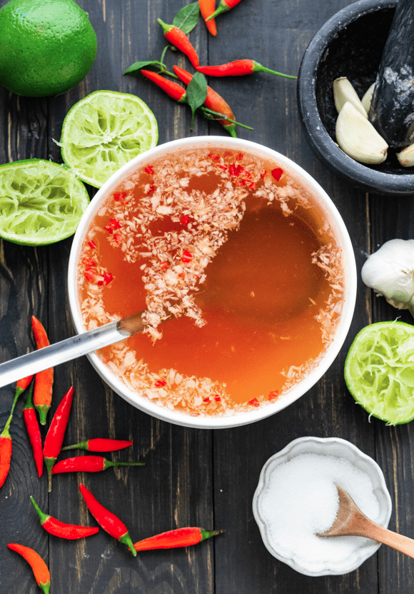

Vietnamese Fish Sauce Dressing

I almost always use this to dress my salads. It has a mild fish sauce flavor with a decent sourness and slightly sweet. I also prefer having a lot of garlic.
Recipe
This recipe makes for about 2-3 cups worth of dressing, and usually that's enough for me to have a week's worth of salads.
Ingredient list
- 400ml water
- 50g brown sugar
- 120ml fish sauce
- 60g lime juice
- 6-8 cloves of garlic
- 1-2 small hot chili peppers
Steps
- Mix water, fish sauce, lime juice, sugar
- Press garlic and chili peppers through a garlic press into the mixture
- Taste and adjust to your liking